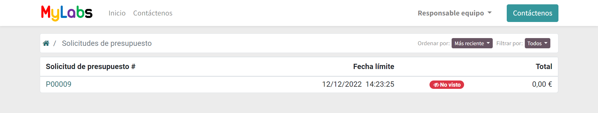
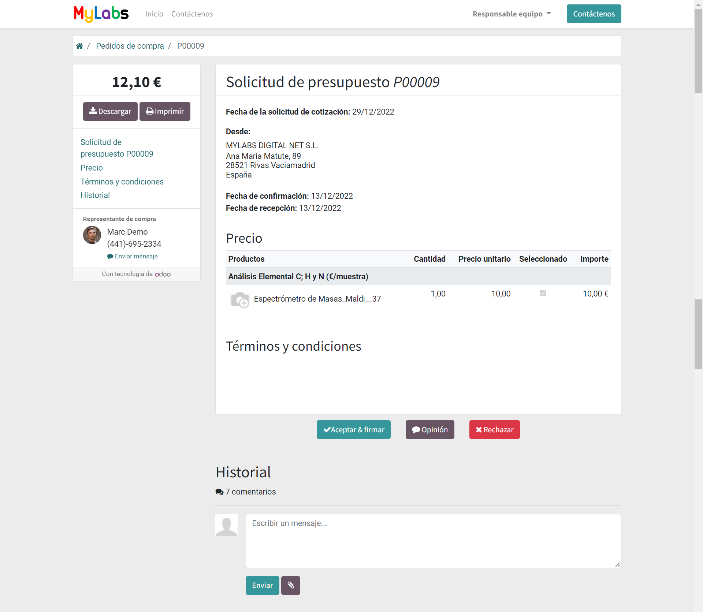
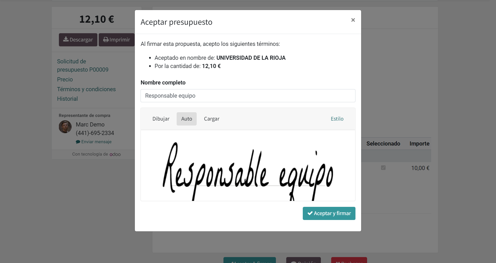
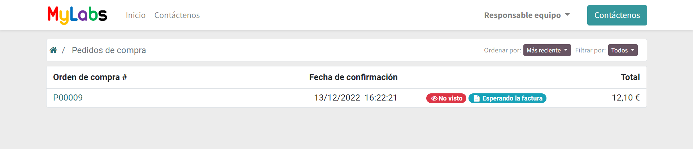
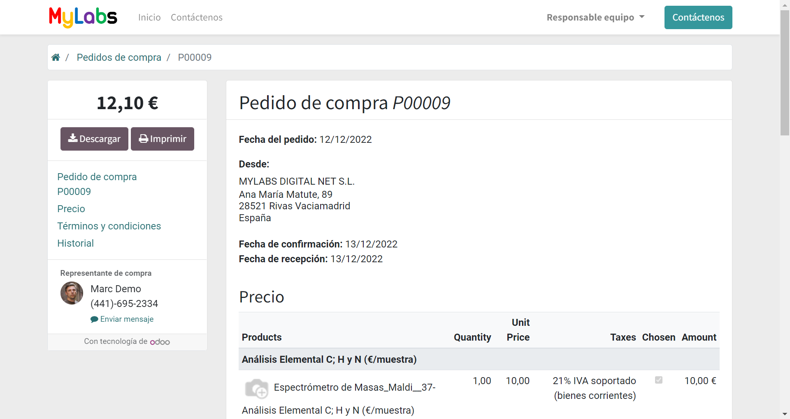
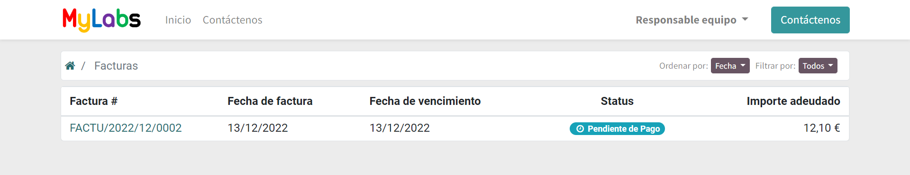
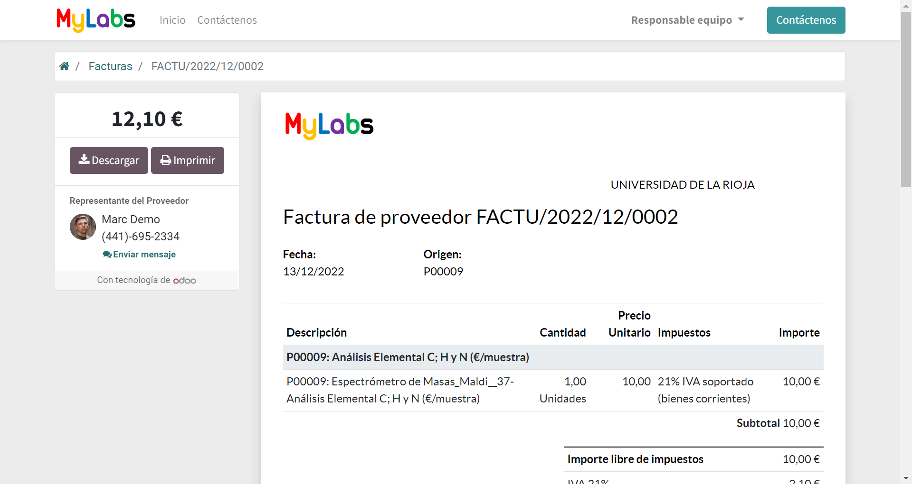

Sección de proveedor¶
La sección de proveedor contiene los documentos en los que el usuario es el proveedor y proporciona servicios.
El flujo de trabajo esperado para los proveedores se compone de los siguientes pasos:
El equipo de MyLabs realiza y envía una Solicitud de presupuesto indicando qué equipos y servicios necesita con una valoración previa de los mismos.
El proveedor deberá revisar e indicar qué equipos y servicios están disponibles y confirmar los precios seleccionando las líneas correspondientes.
El equipo de MyLabs revisa los equipos y servicios elegidos para generar el pedido y enviarlo al proveedor una vez que el cliente haya aceptado la cotización.
El proveedor debe revisar y confirmar que el pedido es realizable. Luego, debe realizarlo, confirmar cuando se realiza el pedido y enviar el informe al equipo de MyLabs.
El equipo de MyLabs notifica al cliente, reenvía los informes y genera una plantilla de factura.
El proveedor debe revisar la factura y confirmarla o generar su propia factura y enviarla al equipo de MyLabs.
El equipo de MyLabs pagará la factura siguiendo las condiciones de pago.
Solicitud de presupuestos¶
En esta sección se muestra las solicitudes de presupuesto que le ha enviado el equipo de MyLabs.
Puede mostrar los detalles de una solicitud de presupuesto.
Select the available equipments and services by clicking on the corresponding checkbox in the Chosen column. Click Accept and sign to accept the quotation. You download the quotation in pdf format and print it.
You can write a comment in the Message and communication history section to confirm the available equipments and services.
Pedidos de compra¶
Esta sección muestra los pedidos que el equipo de MyLabs ha generado a partir de la confirmación de los presupuestos.
Puede hacer clic en un documento para mostrar los detalles del pedido.
Cuando el servicio haya finalizado, de enviar el informe final y un mensaje para confirmarlo.
Facturas¶
En esta sección se muestran las facturas que le ha enviado el equipo de MyLabs y su estado.
Puede hacer clic en un documento para mostrar los detalles de la factura y descargarlo en formato pdf.
